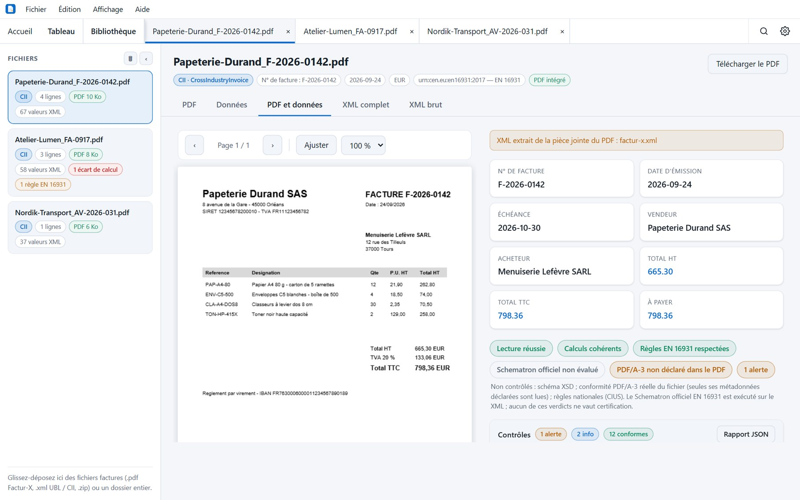
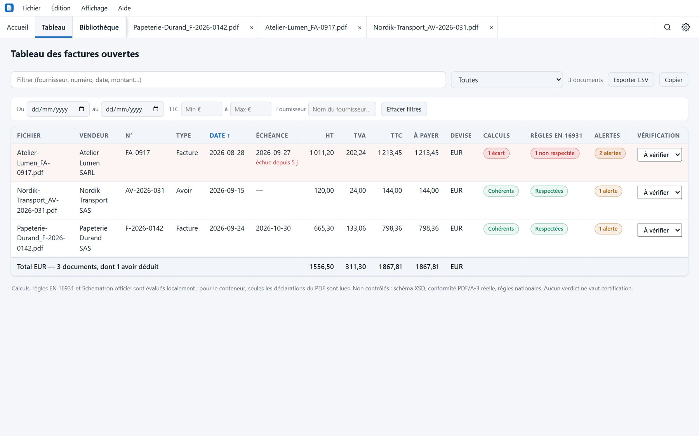

Windows x64
Installateur .exe · 6,4 Mo
0.10.1 Application de bureau · Windows, macOS, Linux
Déposez un PDF Factur-X, une archive ZIP ou un XML UBL/CII : Factur-X Reader affiche le document d'origine, traduit le XML en tableaux lisibles, recalcule les montants et signale ce qui ne colle pas. Sans serveur, sans compte, sans qu'un seul fichier quitte votre ordinateur.

Onglet Données : contrôles de cohérence, écart de 0,01 € et anomalies de conteneur sur une même facture.
Préversion 0.10.1
Choisissez votre système. Notes de version et tous les fichiers sur GitHub.
Installateur .exe · 6,4 Mo
Apple Silicon et Intel · .dmg · 16,4 Mo
AppImage · 86,7 Mo
Pourquoi Factur-X Reader
La plupart des lecteurs ouvrent le PDF. Factur-X Reader confronte le XML aux règles, recalcule chaque montant et vous dit précisément où regarder.
Aucun appel réseau, aucun compte, aucun fichier envoyé pour être validé. La bibliothèque des factures déjà ouvertes reste un fichier local, que vous pouvez désactiver.
Installateur Windows d’environ 6,4 Mo, moteur de validation et règles officielles compris. Écrit en Rust et Tauri, sans navigateur embarqué.
Calculs en décimaux exacts, mentions obligatoires, Schematron officiel, schéma XSD : chaque écart donne sa source, la valeur attendue et la valeur constatée.
Fonctionnalités
Lecture, validation, pointage, suivi, exports : les mêmes données, sous l'angle qui vous sert.
PDF Factur-X, archive ZIP, XML UBL 2.x et CII, ou un dossier entier : le PDF d'origine, les données en tableaux, le XML complet et le XML brut.
Les règles EN 16931 de la Commission européenne, exécutées sur votre poste. Aucune facture n'est envoyée pour être validée.
La structure du XML confrontée au schéma officiel : celui du profil Factur-X annoncé pour le CII, UBL 2.1 pour l'UBL.
PDF/A-3 annoncé, pièce jointe XML déclarée, profil annoncé comparé à celui du XML, polices, chiffrement et métadonnées contrôlés dans le fichier.
Une soixantaine de règles évaluées sur chaque facture : mentions obligatoires, calculs, décimales, catégories de TVA, échéance, escompte.
Écarts et alertes regroupés par source. Pour un PDF avec du texte, les champs reconnus sont comparés au XML, avec des liens vers la page PDF et le champ XML.
Toutes les factures ouvertes sur une page : totaux par devise, avoirs déduits, filtres d'anomalies, de période, de montant et de fournisseur, export CSV.
Factures par échéance et devise. Les doublons probables et les avoirs non affectés sont présentés séparément. Le statut de règlement reste inconnu. Un dossier surveillé importe les nouvelles factures.
Les factures déjà ouvertes, retrouvables entre les sessions. Alertes sur les IBAN à vérifier, les doublons probables et les variations de prix. La confirmation manuelle d’un IBAN reste enregistrée localement.
Vérifiez une ligne sans changer d'onglet. Recherche texte ou expression régulière, dans le document ou dans tous les documents ouverts.
Lignes et tableau en CSV ou Excel, rapport de contrôle en JSON ou PDF, impression de la vue affichée sans l'habillage de l'application.
Lignes pointées, statut À vérifier / Vérifiée / Anomalie, commentaires par facture et par ligne, conservés d'une session à l'autre.
En images
Captures réalisées avec des factures entièrement fictives. Chaque contrôle cite sa règle, sa valeur attendue et sa tolérance.
Le PDF affiche un net à payer de 1 200 €, tandis que son XML indique 1 020 €. Cet écart est volontaire.


Comparatif
Comparaison avec des outils gratuits courants pour ouvrir une facture électronique. Même quand une case est cochée des deux côtés, le niveau de détail peut différer.
Tableau défilable horizontalement →
| Fonctionnalité | Factur-X Reader | Quba Viewer | Mustang | Lecteur PDF |
|---|---|---|---|---|
| Fonctionne hors ligne | ✓ | ✓ | ✓ | ✓ |
| Affiche le PDF | ✓ | ✓ | — | ✓ |
| Affiche les données du XML | ✓ | ✓ | HTML expérimental | — |
| PDF et données côte à côte | ✓ | — | — | — |
| Contrôles arithmétiques détaillés | ✓ | — | Via la validation | — |
| Schematron EN 16931 officiel | Hors ligne | En ligne | ✓ | — |
| Règles françaises BR-FR | Hors ligne | — | — | — |
| Validation XSD | Hors ligne | En ligne | ✓ | — |
| Tableau multi-factures avec totaux | ✓ | — | — | — |
| Pointage, statuts et commentaires | ✓ | — | — | — |
| Historique : IBAN, doublons, prix | ✓ | — | — | — |
| Export CSV / rapport JSON | ✓ | — | — | — |
| Interface en français | ✓ | ✓ | — | Selon l'outil |
Établi d'après la documentation publique de chaque projet. Une case vide signifie « non documenté », pas forcément « impossible ». Factur-X Reader exécute le Schematron officiel EN 16931 et celui des profils Factur-X, et contrôle le schéma XSD, mais ne contrôle ni la conformité PDF/A-3 complète du fichier, ni les règles nationales autres que françaises. Pour une validation qui fait foi, Mustang ou Quba restent les outils de référence.
Formats pris en charge
Factur-X, ZUGFeRD 2.x, UBL et CII partagent la même norme sémantique : EN 16931.
PDF/A-3 avec XML CII en pièce jointe, profils MINIMUM à EXTENDED.
Le même conteneur, côté allemand. La version 1.x n'est pas prise en charge.
Facture et avoir UBL, avec contrôle du schéma officiel.
CrossIndustryInvoice, XML nu ou extrait d'un PDF.
Archive de factures ou dossier entier déposé d'un bloc.
Questions fréquentes
Non. Factur-X Reader ne contacte aucun serveur : la lecture, le recalcul, le Schematron officiel et le contrôle XSD s'exécutent sur votre poste. La seule connexion réseau est celle de votre navigateur, au moment où vous téléchargez l'application.
Ni l'un ni l'autre. L'application est gratuite et son code source est publié sous licence PolyForm Shield. Aucune inscription, aucune clé de licence, aucune limite de factures.
Les PDF Factur-X et ZUGFeRD 2.x, les XML UBL 2.1 et CII, les archives ZIP et les dossiers entiers. ZUGFeRD 1.x n'est pas pris en charge.
Non. L'application exécute le Schematron officiel EN 16931 et celui des profils Factur-X, et contrôle le schéma XSD, mais son validateur n'est pas l'implémentation de référence et la conformité PDF/A-3 n'est vérifiée que sur ses déclarations. Pour une validation qui fait foi, utilisez Mustang ou Quba.
Voir le guide : vérifier une facture Factur-X en 7 contrôles
Cette préversion est distribuée sans signature de l’éditeur. Vérifiez que le fichier provient de la préversion officielle sur GitHub. Sur un poste géré, demandez à votre service informatique si l’installation est autorisée.
Windows. Lancez l’installateur .exe. SmartScreen peut signaler un éditeur inconnu.
macOS. Ouvrez le .dmg et glissez l’application dans Applications. Gatekeeper peut afficher un avertissement. L’aperçu de l’impression groupée a été vérifié sur macOS Apple Silicon.
Linux. Rendez l’AppImage exécutable dans les propriétés du fichier, puis ouvrez-la. Vous pouvez aussi installer le .deb ou le .rpm si votre distribution utilise ce format.
Sur votre poste uniquement. La bibliothèque qui garde la trace des factures ouvertes est un fichier local, et cette fonction peut être désactivée dans les paramètres.
Oui, pour un usage interne, tant que vous ne proposez pas un produit concurrent à partir du logiciel. La licence PolyForm Shield autorise la distribution et les modifications, dans cette limite. Pour un cas particulier, écrivez-moi.
Téléchargez l'application, déposez un fichier, et regardez ce que les contrôles ont à dire. Aucune inscription, aucune donnée transmise.
Préversion non signée. Windows ou macOS peuvent afficher un avertissement. La sélection groupée des PDF imprimables est disponible.